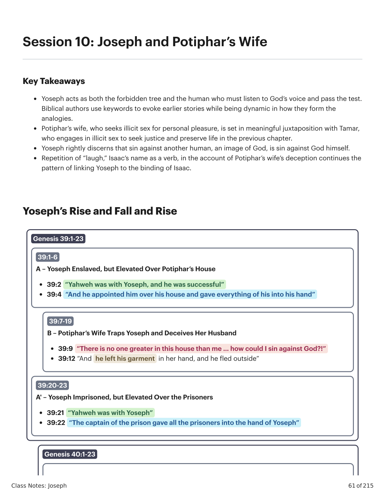
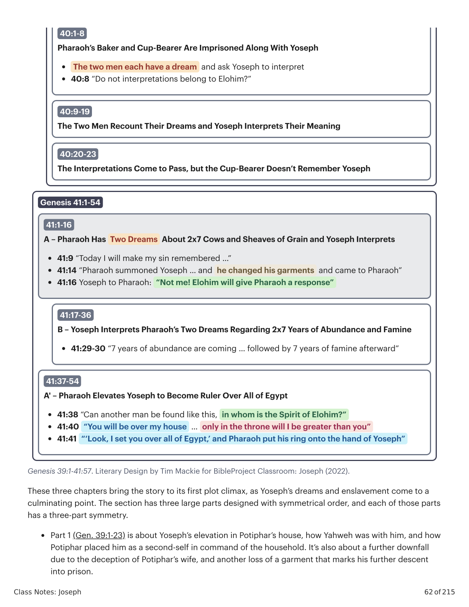
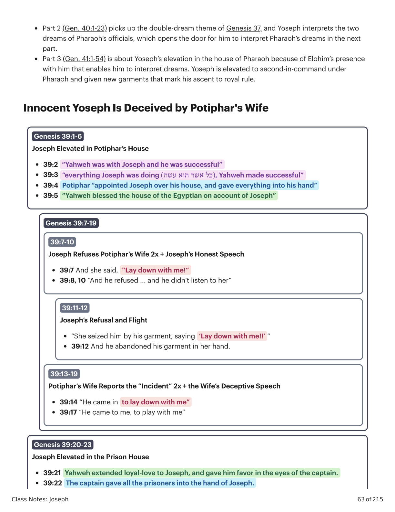
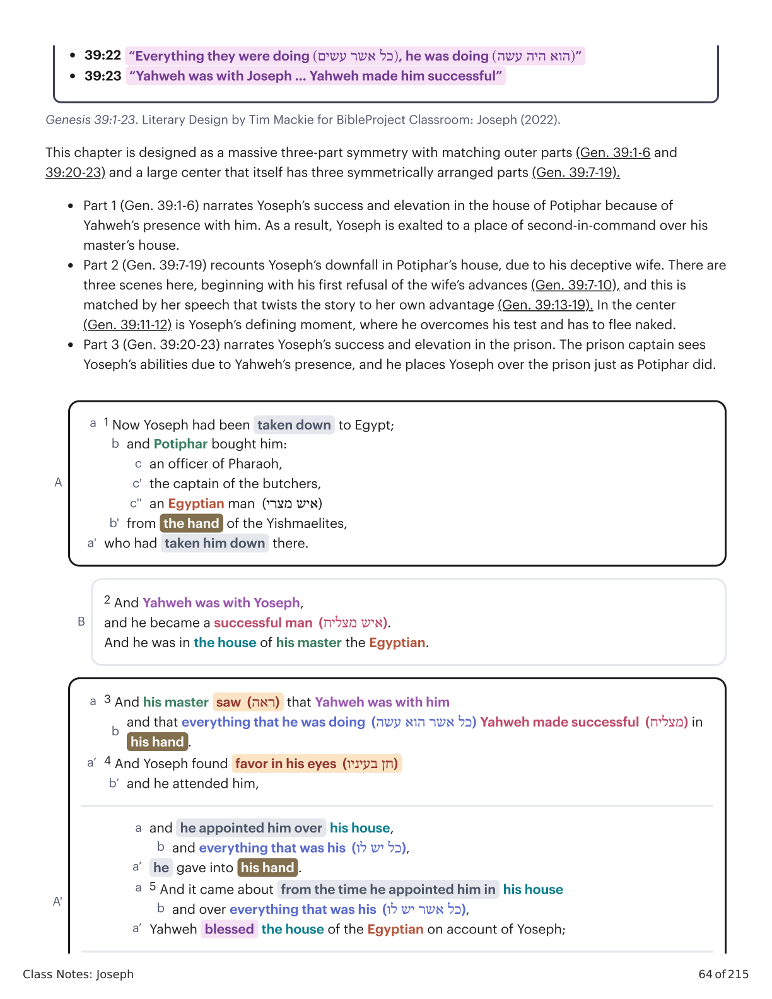
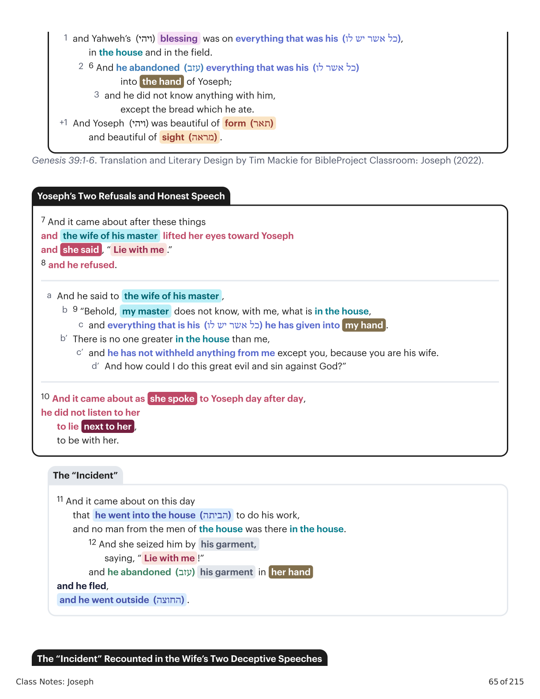
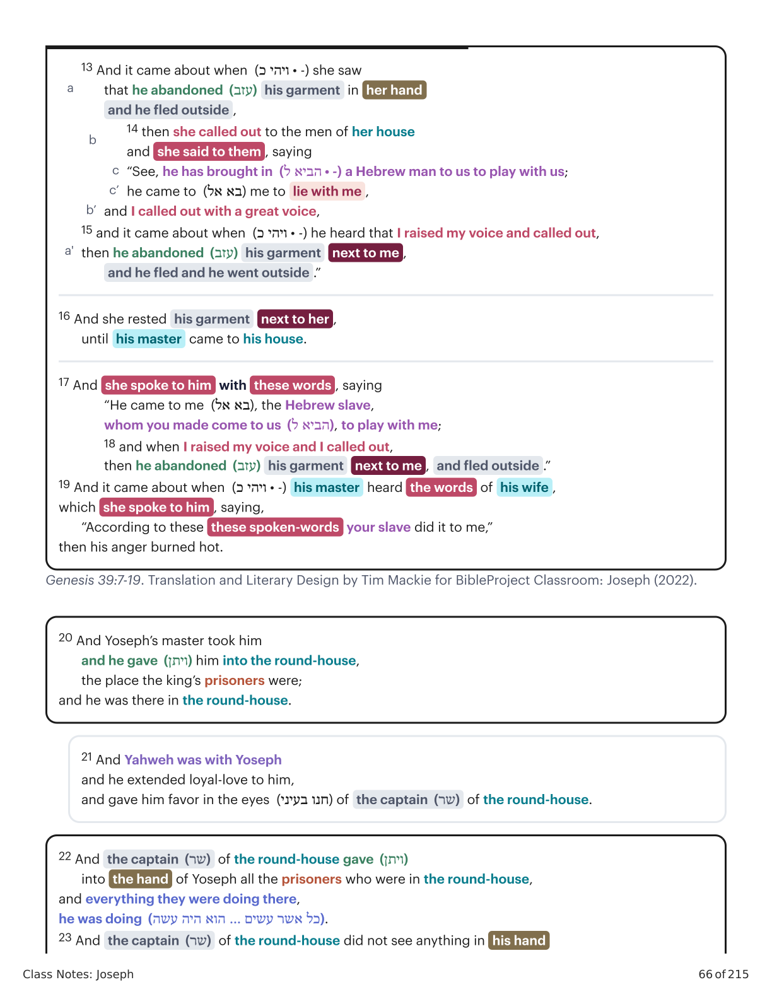
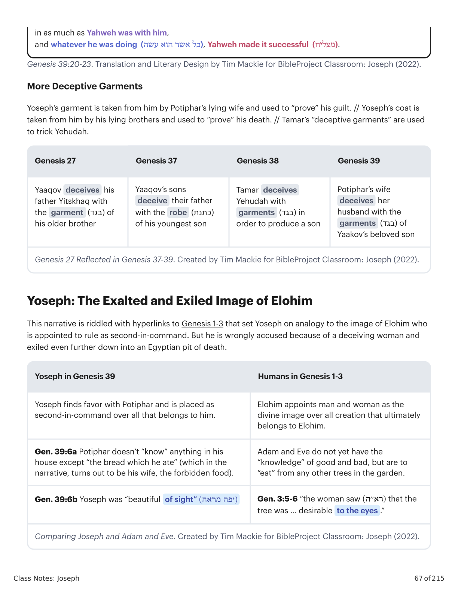
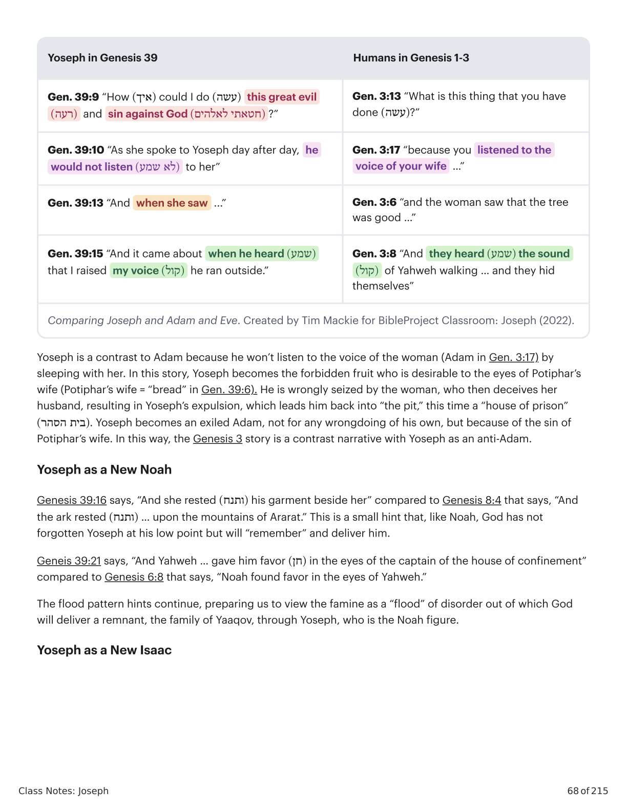
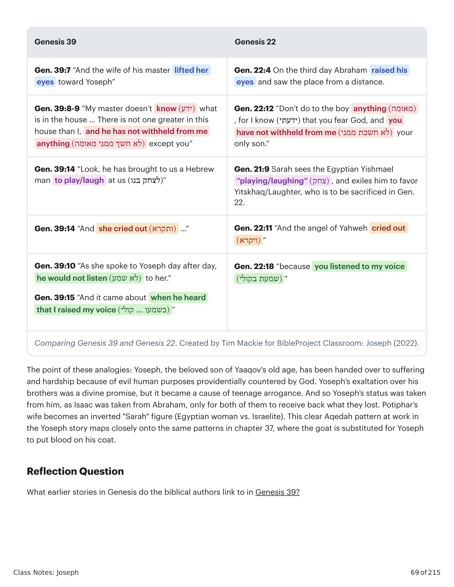

\nClass Notes: Joseph
61 of 215
Session 10: Joseph and Potiphar’s Wife
Key Takeaways
Yoseph acts as both the forbidden tree and the human who must listen to God’s voice and pass the test.
Biblical authors use keywords to evoke earlier stories while being dynamic in how they form the
analogies.
Potiphar’s wife, who seeks illicit sex for personal pleasure, is set in meaningful juxtaposition with Tamar,
who engages in illicit sex to seek justice and preserve life in the previous chapter.
Yoseph rightly discerns that sin against another human, an image of God, is sin against God himself.
Repetition of “laugh,” Isaac’s name as a verb, in the account of Potiphar’s wife’s deception continues the
pattern of linking Yoseph to the binding of Isaac.
Yoseph’s Rise and Fall and Rise
Genesis 39:1-23
39:1-6
A – Yoseph Enslaved, but Elevated Over Potiphar’s House
• 39:2 “Yahweh was with Yoseph, and he was successful”
• 39:4 “And he appointed him over his house and gave everything of his into his hand”
39:7-19
B – Potiphar’s Wife Traps Yoseph and Deceives Her Husband
• 39:9 “There is no one greater in this house than me … how could I sin against God?!”
• 39:12 “And he left his garment in her hand, and he fled outside”
39:20-23
A' – Yoseph Imprisoned, but Elevated Over the Prisoners
• 39:21 “Yahweh was with Yoseph”
• 39:22 “The captain of the prison gave all the prisoners into the hand of Yoseph”
Genesis 40:1-23\n
\n

Gênesis X:Y. Tradução e Design Literário por Tim Mackie para BibleProject Classroom: José (2021).Genesis X:Y. Translation and Literary Design by Tim Mackie for BibleProject Classroom: Joseph (2021).
\n
\nClass Notes: Joseph
62 of 215
Genesis 39:1-41:57. Literary Design by Tim Mackie for BibleProject Classroom: Joseph (2022).
These three chapters bring the story to its first plot climax, as Yoseph’s dreams and enslavement come to a
culminating point. The section has three large parts designed with symmetrical order, and each of those parts
has a three-part symmetry.
Part 1 (Gen. 39:1-23) is about Yoseph’s elevation in Potiphar’s house, how Yahweh was with him, and how
Potiphar placed him as a second-self in command of the household. It’s also about a further downfall
due to the deception of Potiphar’s wife, and another loss of a garment that marks his further descent
into prison.
40:1-8
Pharaoh’s Baker and Cup-Bearer Are Imprisoned Along With Yoseph
•
The two men each have a dream and ask Yoseph to interpret
• 40:8 “Do not interpretations belong to Elohim?”
40:9-19
The Two Men Recount Their Dreams and Yoseph Interprets Their Meaning
40:20-23
The Interpretations Come to Pass, but the Cup-Bearer Doesn’t Remember Yoseph
Genesis 41:1-54
41:1-16
A – Pharaoh Has Two Dreams About 2x7 Cows and Sheaves of Grain and Yoseph Interprets
• 41:9 “Today I will make my sin remembered …”
• 41:14 “Pharaoh summoned Yoseph … and he changed his garments and came to Pharaoh”
• 41:16 Yoseph to Pharaoh: “Not me! Elohim will give Pharaoh a response”
41:17-36
B – Yoseph Interprets Pharaoh’s Two Dreams Regarding 2x7 Years of Abundance and Famine
• 41:29-30 “7 years of abundance are coming … followed by 7 years of famine afterward”
41:37-54
A' – Pharaoh Elevates Yoseph to Become Ruler Over All of Egypt
• 41:38 “Can another man be found like this, in whom is the Spirit of Elohim?”
• 41:40 “You will be over my house … only in the throne will I be greater than you”
• 41:41 “‘Look, I set you over all of Egypt,’ and Pharaoh put his ring onto the hand of Yoseph”\n
\n

Gênesis X:Y. Tradução e Design Literário por Tim Mackie para BibleProject Classroom: José (2021).Genesis X:Y. Translation and Literary Design by Tim Mackie for BibleProject Classroom: Joseph (2021).
\n
\nClass Notes: Joseph
63 of 215
Part 2 (Gen. 40:1-23) picks up the double-dream theme of Genesis 37, and Yoseph interprets the two
dreams of Pharaoh’s officials, which opens the door for him to interpret Pharaoh’s dreams in the next
part.
Part 3 (Gen. 41:1-54) is about Yoseph’s elevation in the house of Pharaoh because of Elohim’s presence
with him that enables him to interpret dreams. Yoseph is elevated to second-in-command under
Pharaoh and given new garments that mark his ascent to royal rule.
Innocent Yoseph Is Deceived by Potiphar's Wife
Genesis 39:1-6
Joseph Elevated in Potiphar’s House
• 39:2 “Yahweh was with Joseph and he was successful”
• 39:3 “everything Joseph was doing )(כל אשר הוא עשה, Yahweh made successful”
• 39:4 Potiphar “appointed Joseph over his house, and gave everything into his hand”
• 39:5 “Yahweh blessed the house of the Egyptian on account of Joseph”
Genesis 39:7-19
39:7-10
Joseph Refuses Potiphar’s Wife 2x + Joseph’s Honest Speech
• 39:7 And she said, “Lay down with me!”
• 39:8, 10 “And he refused ... and he didn’t listen to her”
39:11-12
Joseph’s Refusal and Flight
• “She seized him by his garment, saying ‘Lay down with me!!’ ”
• 39:12 And he abandoned his garment in her hand.
39:13-19
Potiphar’s Wife Reports the “Incident” 2x + the Wife’s Deceptive Speech
• 39:14 “He came in to lay down with me”
• 39:17 “He came to me, to play with me”
Genesis 39:20-23
Joseph Elevated in the Prison House
• 39:21 Yahweh extended loyal-love to Joseph, and gave him favor in the eyes of the captain.
• 39:22 The captain gave all the prisoners into the hand of Joseph.\n
\n

Gênesis X:Y. Tradução e Design Literário por Tim Mackie para BibleProject Classroom: José (2021).Genesis X:Y. Translation and Literary Design by Tim Mackie for BibleProject Classroom: Joseph (2021).
\n
\nClass Notes: Joseph
64 of 215
Genesis 39:1-23. Literary Design by Tim Mackie for BibleProject Classroom: Joseph (2022).
This chapter is designed as a massive three-part symmetry with matching outer parts (Gen. 39:1-6 and
39:20-23) and a large center that itself has three symmetrically arranged parts (Gen. 39:7-19).
Part 1 (Gen. 39:1-6) narrates Yoseph’s success and elevation in the house of Potiphar because of
Yahweh’s presence with him. As a result, Yoseph is exalted to a place of second-in-command over his
master’s house.
Part 2 (Gen. 39:7-19) recounts Yoseph’s downfall in Potiphar’s house, due to his deceptive wife. There are
three scenes here, beginning with his first refusal of the wife’s advances (Gen. 39:7-10), and this is
matched by her speech that twists the story to her own advantage (Gen. 39:13-19). In the center
(Gen. 39:11-12) is Yoseph’s defining moment, where he overcomes his test and has to flee naked.
Part 3 (Gen. 39:20-23) narrates Yoseph’s success and elevation in the prison. The prison captain sees
Yoseph’s abilities due to Yahweh’s presence, and he places Yoseph over the prison just as Potiphar did.
• 39:22 “Everything they were doing )(כל אשר עשים, he was doing )(הוא היה עשה”
• 39:23 “Yahweh was with Joseph … Yahweh made him successful”
A
1 Now Yoseph had been taken down to Egypt;
a
and Potiphar bought him:
b
an officer of Pharaoh,
c
the captain of the butchers,
c'
an Egyptian man (איש מצרי)
c''
from the hand of the Yishmaelites,
b'
who had taken him down there.
a'
B
2 And Yahweh was with Yoseph,
and he became a successful man (איש מצליח).
And he was in the house of his master the Egyptian.
A'
3 And his master saw (ראה) that Yahweh was with him
a
and that everything that he was doing (כל אשר הוא עשה) Yahweh made successful (מצליח) in
his hand .
b
4 And Yoseph found favor in his eyes (חן בעיניו)
a’
and he attended him,
b’
and he appointed him over his house,
a
and everything that was his (כל יש לו),
b
he gave into his hand .
a’
5 And it came about from the time he appointed him in his house
a
and over everything that was his (כל אשר יש לו),
b
Yahweh blessed the house of the Egyptian on account of Yoseph;
a’\n
\n

Gênesis X:Y. Tradução e Design Literário por Tim Mackie para BibleProject Classroom: José (2021).Genesis X:Y. Translation and Literary Design by Tim Mackie for BibleProject Classroom: Joseph (2021).
\n
\nClass Notes: Joseph
65 of 215
Genesis 39:1-6. Translation and Literary Design by Tim Mackie for BibleProject Classroom: Joseph (2022).
and Yahweh’s (ויהי) blessing was on everything that was his (כל אשר יש לו),
1
in the house and in the field.
6 And he abandoned (עזב) everything that was his (כל אשר לו)
2
into the hand of Yoseph;
and he did not know anything with him,
3
except the bread which he ate.
And Yoseph (ויהי) was beautiful of form (תאר)
+1
and beautiful of sight (מראה) .
7 And it came about after these things
and the wife of his master lifted her eyes toward Yoseph
and she said , “ Lie with me .”
8 and he refused.
And he said to the wife of his master ,
a
9 “Behold, my master does not know, with me, what is in the house,
b
and everything that is his (כל אשר יש לו) he has given into my hand .
c
There is no one greater in the house than me,
b’
and he has not withheld anything from me except you, because you are his wife.
c’
And how could I do this great evil and sin against God?”
d’
10 And it came about as she spoke to Yoseph day after day,
he did not listen to her
to lie next to her ,
to be with her.
11 And it came about on this day
that he went into the house (הביתה) to do his work,
and no man from the men of the house was there in the house.
12 And she seized him by his garment,
saying, “ Lie with me !”
and he abandoned (עזב) his garment in her hand
and he fled,
and he went outside (החוצה) .
Yoseph’s Two Refusals and Honest Speech
The “Incident”
The “Incident” Recounted in the Wife’s Two Deceptive Speeches\n
\n

Gênesis X:Y. Tradução e Design Literário por Tim Mackie para BibleProject Classroom: José (2021).Genesis X:Y. Translation and Literary Design by Tim Mackie for BibleProject Classroom: Joseph (2021).
\n
\nClass Notes: Joseph
66 of 215
Genesis 39:7-19. Translation and Literary Design by Tim Mackie for BibleProject Classroom: Joseph (2022).
a
13 And it came about when (ויהי כ • -) she saw
that he abandoned (עזב) his garment in her hand
and he fled outside ,
b
14 then she called out to the men of her house
and she said to them , saying
“See, he has brought in (הביא ל • -) a Hebrew man to us to play with us;
c
he came to (בא אל) me to lie with me ,
c’
and I called out with a great voice,
b’
a'
15 and it came about when (ויהי כ • -) he heard that I raised my voice and called out,
then he abandoned (עזב) his garment
next to me ,
and he fled and he went outside .”
16 And she rested his garment
next to her ,
until his master came to his house.
17 And she spoke to him with these words , saying
“He came to me (בא אל), the Hebrew slave,
whom you made come to us (הביא ל), to play with me;
18 and when I raised my voice and I called out,
then he abandoned (עזב) his garment
next to me , and fled outside .”
19 And it came about when (ויהי כ • -) his master heard the words of his wife ,
which she spoke to him , saying,
“According to these these spoken-words your slave did it to me,”
then his anger burned hot.
20 And Yoseph’s master took him
and he gave (ויתן) him into the round-house,
the place the king’s prisoners were;
and he was there in the round-house.
21 And Yahweh was with Yoseph
and he extended loyal-love to him,
and gave him favor in the eyes (חנו בעיני) of the captain (שר) of the round-house.
22 And the captain (שר) of the round-house gave (ויתן)
into the hand of Yoseph all the prisoners who were in the round-house,
and everything they were doing there,
he was doing (כל אשר עשים … הוא היה עשה).
23 And the captain (שר) of the round-house did not see anything in his hand\n
\n

Gênesis X:Y. Tradução e Design Literário por Tim Mackie para BibleProject Classroom: José (2021).Genesis X:Y. Translation and Literary Design by Tim Mackie for BibleProject Classroom: Joseph (2021).
\n
\nClass Notes: Joseph
67 of 215
Genesis 39:20-23. Translation and Literary Design by Tim Mackie for BibleProject Classroom: Joseph (2022).
More Deceptive Garments
Yoseph’s garment is taken from him by Potiphar’s lying wife and used to “prove” his guilt. // Yoseph’s coat is
taken from him by his lying brothers and used to “prove” his death. // Tamar’s “deceptive garments” are used
to trick Yehudah.
Genesis 27
Genesis 37
Genesis 38
Genesis 39
Yaaqov deceives his
father Yitskhaq with
the garment (בגד) of
his older brother
Yaaqov’s sons
deceive their father
with the robe (כתנת)
of his youngest son
Tamar deceives
Yehudah with
garments (בגד) in
order to produce a son
Potiphar’s wife
deceives her
husband with the
garments (בגד) of
Yaakov’s beloved son
Genesis 27 Reflected in Genesis 37-39. Created by Tim Mackie for BibleProject Classroom: Joseph (2022).
Yoseph: The Exalted and Exiled Image of Elohim
This narrative is riddled with hyperlinks to Genesis 1-3 that set Yoseph on analogy to the image of Elohim who
is appointed to rule as second-in-command. But he is wrongly accused because of a deceiving woman and
exiled even further down into an Egyptian pit of death.
Yoseph in Genesis 39
Humans in Genesis 1-3
Yoseph finds favor with Potiphar and is placed as
second-in-command over all that belongs to him.
Elohim appoints man and woman as the
divine image over all creation that ultimately
belongs to Elohim.
Gen. 39:6a Potiphar doesn’t “know” anything in his
house except “the bread which he ate” (which in the
narrative, turns out to be his wife, the forbidden food).
Adam and Eve do not yet have the
“knowledge” of good and bad, but are to
“eat” from any other trees in the garden.
Gen. 39:6b Yoseph was “beautiful of sight” )(יפה מראהGen. 3:5-6 “the woman saw )(רא׳׳ה that the
tree was … desirable to the eyes .”
Comparing Joseph and Adam and Eve. Created by Tim Mackie for BibleProject Classroom: Joseph (2022).
in as much as Yahweh was with him,
and whatever he was doing (כל אשר הוא עשה), Yahweh made it successful (מצליח).\n
\n

Gênesis X:Y. Tradução e Design Literário por Tim Mackie para BibleProject Classroom: José (2021).Genesis X:Y. Translation and Literary Design by Tim Mackie for BibleProject Classroom: Joseph (2021).
\n
\nClass Notes: Joseph
68 of 215
Yoseph in Genesis 39
Humans in Genesis 1-3
Gen. 39:9 “How )(איך could I do )(עשהthis great evil
)(רעה and sin against God )(חטאתי לאלהים?”
Gen. 3:13 “What is this thing that you have
done )(עשה?”
Gen. 39:10 “As she spoke to Yoseph day after day, he
would not listen )(לא שמע to her”
Gen. 3:17 “because you listened to the
voice of your wife …”
Gen. 39:13 “And when she saw ...”
Gen. 3:6 “and the woman saw that the tree
was good …”
Gen. 39:15 “And it came about when he heard )(שמע
that I raised my voice )(קול he ran outside.”
Gen. 3:8 “And they heard )(שמע the sound
)(קול of Yahweh walking … and they hid
themselves”
Comparing Joseph and Adam and Eve. Created by Tim Mackie for BibleProject Classroom: Joseph (2022).
Yoseph is a contrast to Adam because he won’t listen to the voice of the woman (Adam in Gen. 3:17) by
sleeping with her. In this story, Yoseph becomes the forbidden fruit who is desirable to the eyes of Potiphar’s
wife (Potiphar’s wife = “bread” in Gen. 39:6). He is wrongly seized by the woman, who then deceives her
husband, resulting in Yoseph’s expulsion, which leads him back into “the pit,” this time a “house of prison”
)(בית הסהר. Yoseph becomes an exiled Adam, not for any wrongdoing of his own, but because of the sin of
Potiphar’s wife. In this way, the Genesis 3 story is a contrast narrative with Yoseph as an anti-Adam.
Yoseph as a New Noah
Genesis 39:16 says, “And she rested )(ותנח his garment beside her” compared to Genesis 8:4 that says, “And
the ark rested )(ותנח … upon the mountains of Ararat.” This is a small hint that, like Noah, God has not
forgotten Yoseph at his low point but will “remember” and deliver him.
Geneis 39:21 says, “And Yahweh … gave him favor )(חן in the eyes of the captain of the house of confinement”
compared to Genesis 6:8 that says, “Noah found favor in the eyes of Yahweh.”
The flood pattern hints continue, preparing us to view the famine as a “flood” of disorder out of which God
will deliver a remnant, the family of Yaaqov, through Yoseph, who is the Noah figure.
Yoseph as a New Isaac\n
\n

Gênesis X:Y. Tradução e Design Literário por Tim Mackie para BibleProject Classroom: José (2021).Genesis X:Y. Translation and Literary Design by Tim Mackie for BibleProject Classroom: Joseph (2021).
\n
\nClass Notes: Joseph
69 of 215
Genesis 39
Genesis 22
Gen. 39:7 “And the wife of his master lifted her
eyes toward Yoseph”
Gen. 22:4 On the third day Abraham raised his
eyes and saw the place from a distance.
Gen. 39:8-9 “My master doesn’t know )(ידע what
is in the house … There is not one greater in this
house than I, and he has not withheld from me
anything )(לא חשך ממני מאומה except you”
Gen. 22:12 “Don’t do to the boy anything )(מאומה
, for I know )(ידעתי that you fear God, and you
have not withheld from me )(לא חשכת ממני your
only son.”
Gen. 39:14 “Look, he has brought to us a Hebrew
man to play/laugh at us )(לצחק בנו”
Gen. 21:9 Sarah sees the Egyptian Yishmael
“playing/laughing” )(צחק, and exiles him to favor
Yitskhaq/Laughter, who is to be sacrificed in Gen.
22.
Gen. 39:14 “And she cried out )(ותקרא …”
Gen. 22:11 “And the angel of Yahweh cried out
)(ויקרא”
Gen. 39:10 “As she spoke to Yoseph day after day,
he would not listen )(לא שמע to her.”
Gen. 39:15 “And it came about when he heard
that I raised my voice )(כשמעו … קולי”
Gen. 22:18 “because you listened to my voice
)(שמעת בקולי”
Comparing Genesis 39 and Genesis 22. Created by Tim Mackie for BibleProject Classroom: Joseph (2022).
The point of these analogies: Yoseph, the beloved son of Yaaqov's old age, has been handed over to suffering
and hardship because of evil human purposes providentially countered by God. Yoseph’s exaltation over his
brothers was a divine promise, but it became a cause of teenage arrogance. And so Yoseph’s status was taken
from him, as Isaac was taken from Abraham, only for both of them to receive back what they lost. Potiphar’s
wife becomes an inverted "Sarah" figure (Egyptian woman vs. Israelite). This clear Aqedah pattern at work in
the Yoseph story maps closely onto the same patterns in chapter 37, where the goat is substituted for Yoseph
to put blood on his coat.
Reflection Question
What earlier stories in Genesis do the biblical authors link to in Genesis 39?\n
\n

Gênesis X:Y. Tradução e Design Literário por Tim Mackie para BibleProject Classroom: José (2021).Genesis X:Y. Translation and Literary Design by Tim Mackie for BibleProject Classroom: Joseph (2021).
Esses ciclos temáticos estabelecem um padrão narrativo, uma melodia temática, que se recicla a cada geração, desenvolvendo e avançando a melodia. A melodia básica é assim.These thematic cycles set up a narrative pattern, a thematic melody, that re-cycles with each generation, developing and advancing the melody. The basic melody goes like this.
1. Criação e bênção1. Creation and blessing
Deus traz ordem/vida/bênção para fora do caos/águas/morte/maldição.God brings order/life/blessing out of chaos/waters/death/curse.
Palavras-chave
Vida, bênção, criar, estabelecer, semente, brotar, crescer, fruto, frutífero, multiplicar
Sete, plenitude, juramento (todos grafados שבע)
Imagens-chave: terra seca, refúgio, segurança, ordemKey words
Life, blessing, create, establish, seed, sprout, grow, fruit, fruitful, multiply
Seven, fullness, oath (all spelled שבע)
Key images: dry land, refuge, safety, order
2. Loucura, teste e fracasso (também chamado de "a queda tola")2. Folly, test, and failure (a.k.a. "the foolish fall")
Deus convida um parceiro humano escolhido a compartilhar da ordem/vida/bênção, o que coloca uma decisão/teste de sua confiabilidade sobre a mesa.God invites a chosen human partner to share in the order/life/blessing, which places a decision/test of their trustworthiness on the table.
O parceiro escolhido de Deus falha/passa no teste, geralmente envolvendo decepção/divisão/violência.God's chosen partner fails/succeeds the test, usually involving deception/division/violence.
A mesma pessoa/próxima geração enfrenta sua própria oportunidade e teste, e falha/passa, geralmente envolvendo uma expressão intensificada de decepção/divisão/violência.The same person/next generation faces their own opportunity and test and fails/succeeds, usually involving an intensified expression of deception/division/violence.
A sequência escalada de testes e fracassos leva a uma separação entre os personagens-chave, de modo que uma pessoa ou família se separa do resto e é escolhida por Deus para um novo futuro.The escalating sequence of tests and failures leads to a separation between the key characters so that one person or family splits off from the rest and is chosen by God for a new future.
Palavras-chave encontradas em Gênesis 2-3, 4-5, 6:1-4.Key words found in Genesis 2-3, 4-5, 6:1-4.
3. Des-criação e re-criação3. De-creation and re-creation
Des-criação: Deus provoca uma inversão do nº 1 acima, geralmente uma escalada de caos/morte/maldição.De-creation: God brings about an inversion of #1 above, usually an escalation of chaos/death/curse.
A partir dessa des-criação, Deus escolhe/preserva um remanescente/semente e inicia um novo movimento de re-criação através dele, muitas vezes marcado por alianças e trocadilhos sobre a raiz hebraica שבע, "sete/plenitude/juramento" ou "aliança" (ברית).Out of that de-creation, God chooses/preserves a remnant/seed and begins a new movement of re-creation through them, often marked by covenants and wordplays on the Hebrew root שבע, "seven/fullness/oath" or "covenant" (ברית).
Palavras-chave encontradas em Gênesis 6:5-9:17.Key words found in Genesis 6:5-9:17.
4. Repita4. Repeat

Gênesis 1:1-11:26. Tradução e Design Literário por Tim Mackie para BibleProject Classroom: Abraão (2021).Genesis 1:1-11:26. Translation and Literary Design by Tim Mackie for BibleProject Classroom: Abraham (2021).
Pergunta de ReflexãoReflection Question
De que maneiras você vê a história de Yoseph reencenando eventos dos capítulos iniciais de Gênesis?In what ways do you see Yoseph's story replaying events from the early chapters of Genesis?